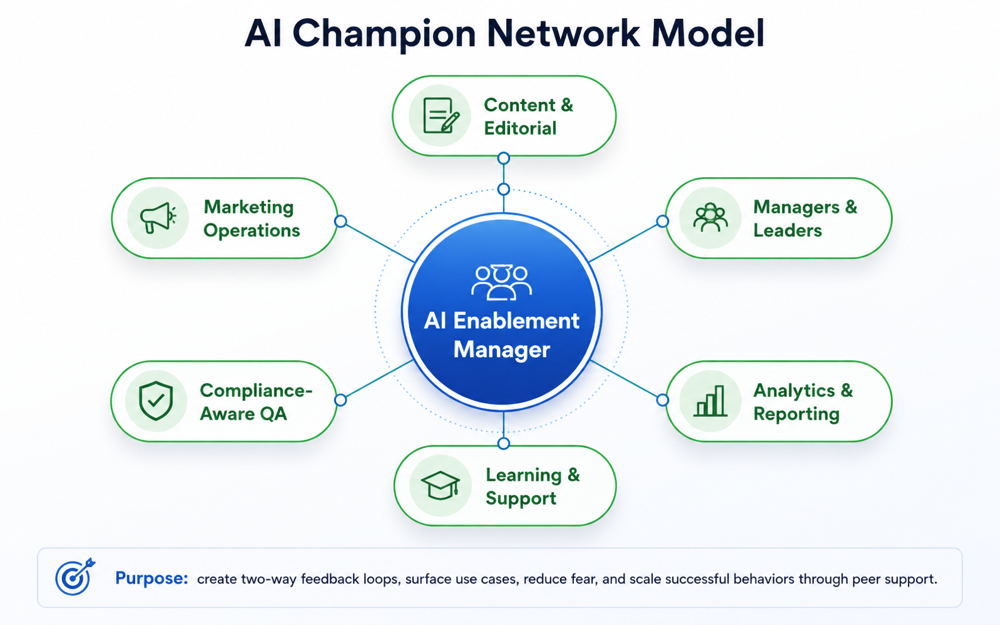

AI Enablement
AI Enablement
Practical, governance-aware AI enablement, drawn from hands-on enterprise AI work, including an enterprise Copilot pilot, in a regulated healthcare environment.
The Phased AI Enablement Framework
An evidence-based maturity model for safe enterprise AI adoption, sequenced from 90 days to a five-year horizon.
Open PDFAI Adoption Playbook
A five-phase guide to introducing AI tools to a team successfully.
Open PDFAI Prompt Cookbook
Reusable prompt patterns for everyday knowledge work, from data and writing to project management and planning.
Open PDFAI-Assisted Workflow Case Study
Turning a recurring one-hour task into five minutes, safely.
Open PDFResponsible AI Use Framework
Five durable guardrails for AI in regulated, high-stakes work.
Open PDFAI Literacy Course
A micro-course teaching responsible AI use (shared with the Learning section).
Open courseEnablement toolkit
Practical tools and templates I use to plan, de-risk, and measure an AI rollout.
AI Readiness Assessment
A scoring tool to gauge where a team stands before an AI enablement program begins.
Open PDFAI Enablement Stakeholder Map
Who matters in an AI adoption effort, what they care about, and the message each one needs.
Open PDFAI Enablement Resistance & Risk Plan
The real risks of AI adoption, with a practical mitigation for each.
Open PDFAI Adoption Dashboard
A metrics specification for tracking whether an AI program is actually working, safely.
Open PDFHow I approach this
Two frameworks I use when bringing AI into an organization: a phased adoption plan that moves from discovery to measurable scale, and a peer-champion network that keeps momentum after launch.
![90-Day AI Enablement Roadmap diagram with three phases: Days 1 to 30, Discover and Organize, covering workflow interviews, a use-case intake form, risk and impact categories, and stakeholder mapping; Days 31 to 60, Pilot and Train, covering role-based playbooks, office hours, a champion network, and pilot feedback loops; Days 61 to 90, Scale and Report, covering standardized SOPs, a published use-case library, report on time savings, and a leadership readout. Success measures include adoption rate, use cases launched, hours saved, confidence lift, quality and QA findings, and stakeholder feedback.](../assets/ai-enablement-90-day-roadmap.png)
